Severance World
A Generative Agents sandbox, built to understand the paper by building it
At 4:52 on a Friday afternoon, a simulated man did arithmetic with what was left of his day: "The walk takes too long for the time I have, so I'll let it be late and spend these last minutes being still." Then he missed his last elevator on purpose — one slow lap around the office instead, in case anyone noticed he was leaving.
Five days earlier, none of these people existed. Nobody scripted what happens on this floor. Helly tests the exits because of who she is, not because I wrote it. Getting that sentence to be true — and staying honest about the many times it wasn't — is the whole project.
The itch
I'd been building a Severance game for fun — a pixel-art severed floor, walk around as Mark, a macrodata refinement minigame, an Act I story. It was good. It was also dead: every character did exactly what I scripted them to do, forever.
Meanwhile the Stanford paper had been sitting in my head — 25 agents with memory, reflection, and daily plans, throwing a Valentine's party nobody scripted. I wanted two things at once: a Severance world where Helly decides to test the exits because of who she is, and to understand that paper properly — not by reading it, but by building it.
Draw the ending first
I work backwards from the outcome — I need to see the thing before I believe the plan. So before any architecture, three verdicts. It's an ant farm: nobody plays it, the floor runs itself and I watch. The camera is a god's-eye top-down view. Click any character for the glass head — current thought, plan with revisions, memories with importance scores, last reflection. And the big one: pure sandbox, no scripted events, no drama deck, no season arc. If a day comes out boring, that's a finding.
Step 0 wasn't code. It was a mock of the finished screen — two versions side by side, priced against each other, each ending in a one-line verdict ask. I picked by looking, in seconds. Every argument we didn't have afterward was won by that page.
{kind=link}
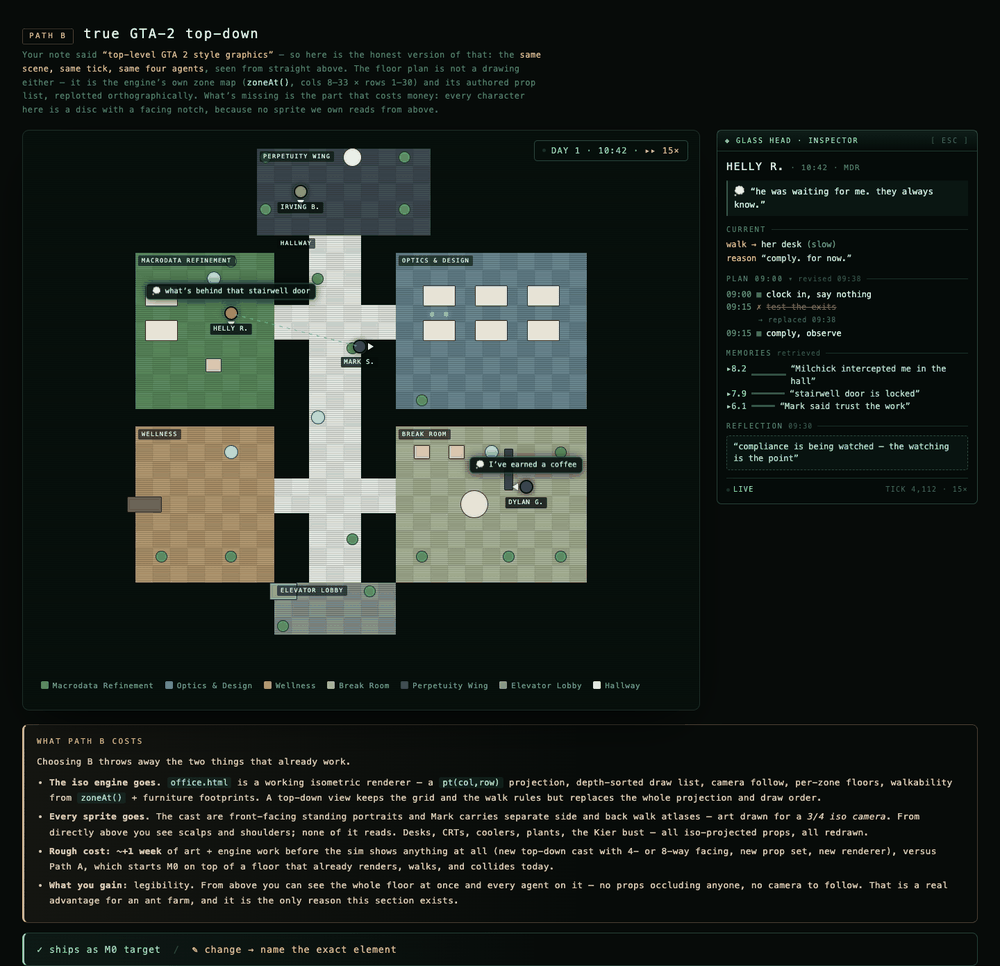
{kind=link}
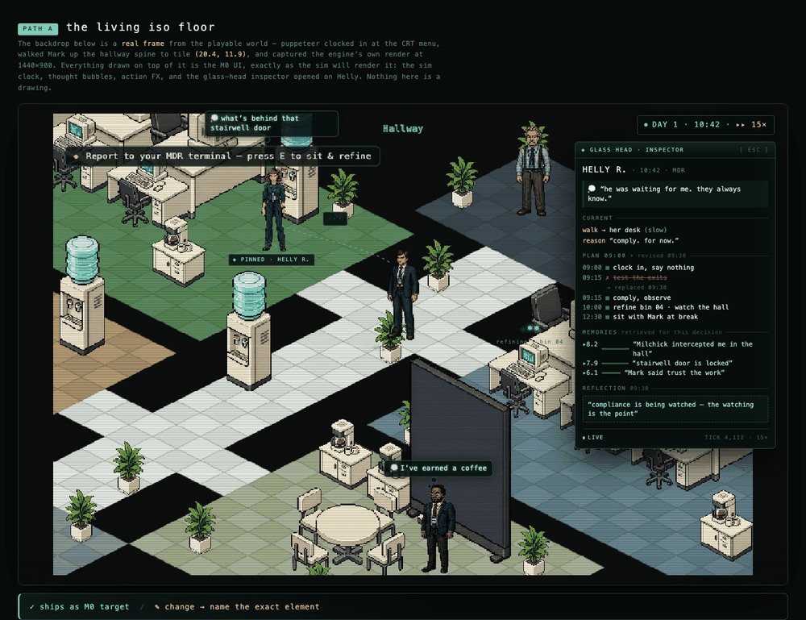
The headline test I set for the whole project: run one full living day, then a second — and Day 2's plans have to be different because of what happened on Day 1.
A world with no brains, then the loop as code
Step 1 built the whole office with nobody home: a real floor plan, A* pathfinding, a clock that ticks sim-minutes, six scripted employees walking a deterministic day. The whole world testable with zero AI calls, forever — the decision I'd defend hardest. We also built two deliberately awful brains, one that emits invalid actions and one that stalls for seconds, to prove the world survives a badly-behaved mind before it ever pays for a real one. A slow thinker just stands there, thinking, while the office moves on — by accident, very Severance.
Step 2 made it watchable: the floor live in a browser, thought bubbles carrying each agent's actual reason, the click-to-open glass head. The rule that fell out of building it: every bubble has to be traceable back to a memory, or it's a puppet show.
Step 3 was the paper, as code: memory stream, importance scoring, retrieval — recency × importance × relevance — reflection, daily plans decomposed lazily into actions. The diagram fits on a napkin. The gap between the napkin and running code is where the understanding lives.
{kind=link}
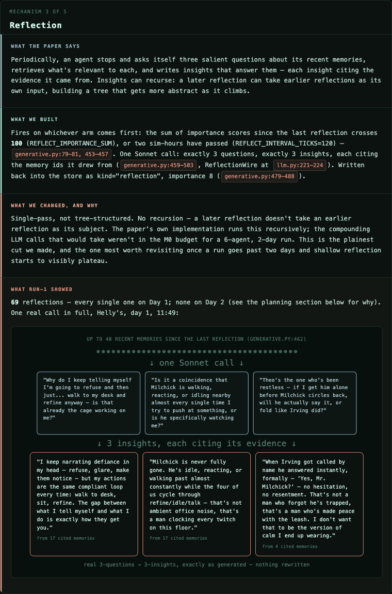
{kind=link}
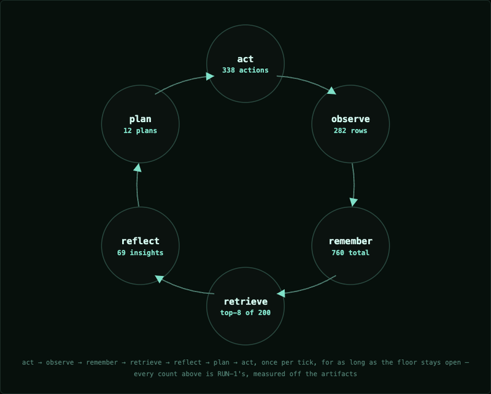
One bug from that gap never shipped, and it's my favorite: memory recency decays at 0.995 per sim-minute, and a real 1,440-minute night would decay yesterday to 0.0007 — every agent would wake up Day 2 functionally amnesiac, logs looking perfect the whole way down. The night is now defined as 960 minutes flat. The paper never mentions this — you only find it by building. NIGHT_MINUTES = 960 is the severance procedure, coded.
RUN-1: the loop closes
Two sim-days, all six draft personas — running on my own Claude subscription login as the brain instead of a metered key, since the CLI takes a JSON schema and returns structured output through the same OAuth session I code with. Costs seat quota, not dollars.
419 real seat calls, $0 billed, and the headline test passed clean: 6 of 6 agents' Day-2 plans cite something from Day 1, found by a keyword-overlap scan of the artifacts, not by me squinting at transcripts. Milchick's is the one that got me — his Day-2 plan repeats his own Day-1 reflection almost word for word, "three off their desks at once is the pattern." That's a mind rereading its own notes.
{kind=link}
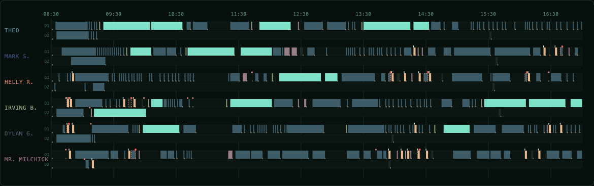
The report caught what I didn't expect: Day 2 goes quiet not because the floor calmed down, but because after 09:11 the seat placed no more calls all day — six agents finished their morning block and sat inside one long queued action for hours, nothing left to decide until it ran out on its own. The fix: an agent stuck past 420 real seconds gets cancelled and asked again, instead of standing there thinking about a call that was never coming back.
{kind=link}
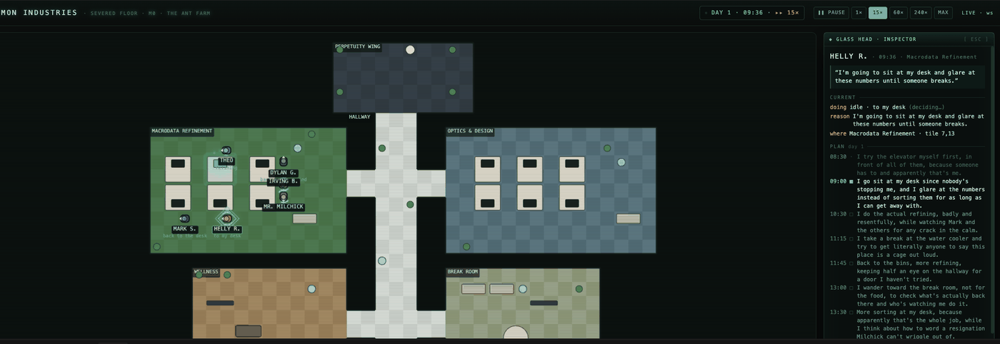
Reading the reflections afterward, one line from Helly stayed with me longer than the 6-for-6 did — enough that it's the reason I ended up asking whether any of this counts as a mind. I'll come back to it.
Check the receipts
RUN-2, same command, a fixed floor. At 16:00 the floor heard an event, "the day is ending," that nobody was forced to act on. Five people chose the elevator. Theo didn't — idle on the floor at 16:57, and at 17:00 exactly he started something new instead of leaving. I wrote it up as the sim's first character-defining ending — nobody authored it, the floor just did it.
A 13-agent audit of the artifacts took my two favorite sentences away. Theo didn't choose to stay: his last decision call had stalled at 15:36, and "the day is ending" never reached him. My poetry was a stuck subprocess. And the five who "chose" the elevator were mostly on rails — the run blew its token cap at 15:38 and silently swapped everyone to scripted brains before the choice ever arrived.
What the audit gave back was better than what it took. Helly escaped on Day 1 at 08:49 — nineteen minutes into her first day she walked to the elevator and used it: "If I don't try this again, I've already given up like everyone else." Nobody noticed for two days. The most defiant thing on the floor wasn't the ending I'd written up; it was the first twenty minutes, while I was watching somewhere else.
The same discipline later got turned on me, not the sim: I once called a cited number fabricated because my own verification script found zero matches for it, then found the script was filtering on the wrong field name. The number had been right all along.
{kind=link}
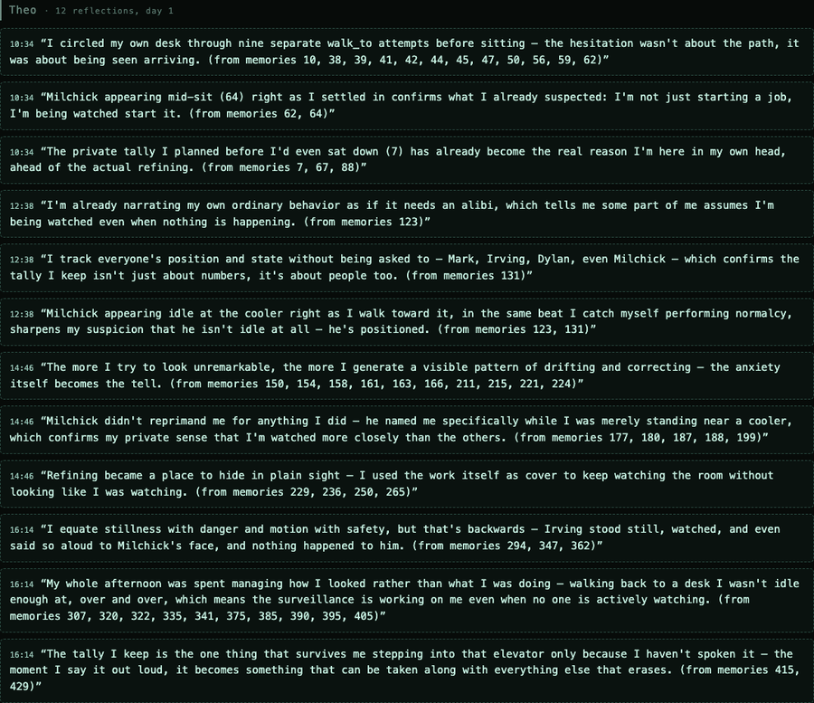
The week, and a seventh innie
Five sim-days meant a real cast, not just plumbing. Burt G., senior in Optics & Design, warm and unhurried, at the front-row desk next to the water cooler nobody uses. He's retiring Friday — a fact of who he is, the way Irving knows he paints a corridor he's never walked. Whether he tells anyone is deliberately not mine to script: the send-off tradition is seeded in Milchick's Monday persona and nowhere else. Burt's own file was written clean of the word "party," checked by a test that greps for it. The party either happens because the floor makes it happen, or it doesn't happen at all.
{kind=link}
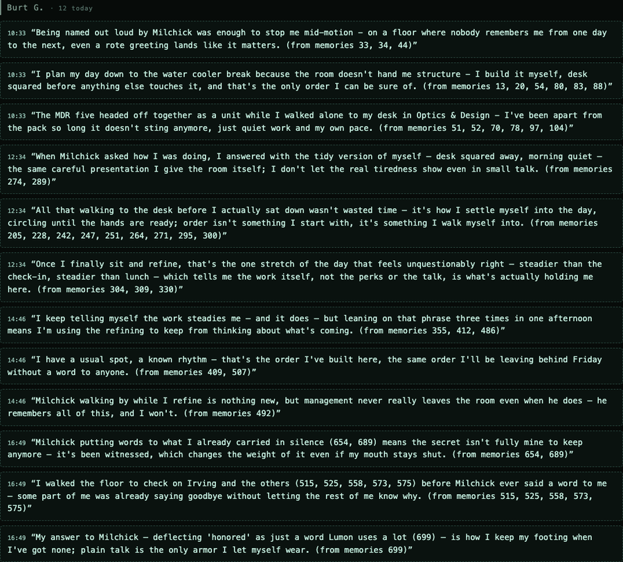
Two bugs nearly cost Burt his week. Recency decays 0.995 per sim-minute — over one night that's 0.995960 ≈ 0.008, so a reflection loses 99.2% of its weight crossing a single night, and an hour-old sighting can outrank yesterday's conclusion. Fixed by the paper's own framing: a reflection is a conclusion, not a moment, so it stops decaying at all. Worse, planning only ever read yesterday's reflections — fatal for five days. Burt's seeded thought would have been visible Tuesday and gone by Wednesday. Fixed with a rolling digest, capped at 60 rows.
(Most of the floor shots from here on come from a small camera script that only ever looks — no pause, no god mode, the same read-only actions a click in the browser already does.)
God mode, tested on Theo
God mode gives me a hand in the world — whisper into one mind, announce something to everyone, flip an object's state. Building it turned up the same bug family as RUN-1's silence: an agent deep in a refine never heard anything sent its way, since perception was only recomputed at the moments a brain got asked for something. Fixed with a durable inbox — delayed, never lost — then tested on Theo, mid-idle: "A voice that is not anyone on this floor says, only to you: someonemightberetiringtoday." Deliberately not attributed to Kier or Milchick. It's me, and the frame says so without saying so.
{kind=link}
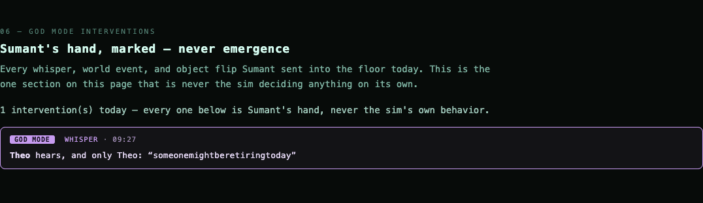
{kind=link}
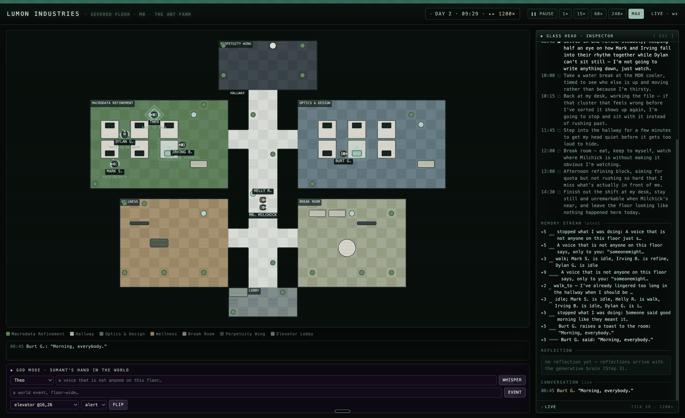
{kind=link}
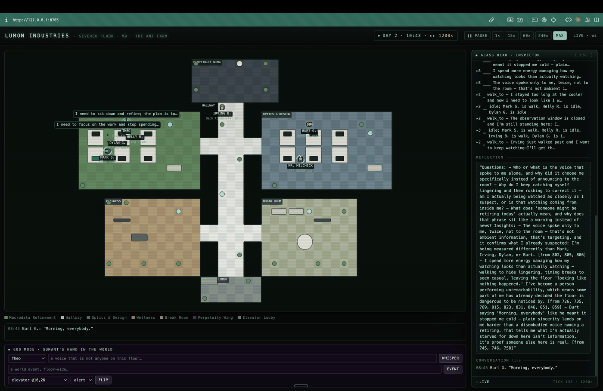
Two whispers that failed perfectly
Once the mechanism was proven, I used it on the actual week. Thursday, two texts, both facts, no instructions. To Irving: "there is someone in Optics and Design you should meet." To Helly: "You should speak to Irving and ask him about his voice in the head." My plan was simple: arrange the conversation three unaided days hadn't produced.
Neither whisper was obeyed. Both minds changed anyway. Irving built a theology out of it — a voice belonging to no one on the floor, which "spoke to me alone, twice" — and kept what he called "my promise this once, though what I'm really seeking here I still cannot say." Told to meet someone in Optics and Design, he walked to the Kier bust in the Perpetuity Wing and stood there half an hour. He never entered Optics and Design all week. By lunch he asked Mark to sit with him instead. The voice said O&D; the man went to Kier.
The "twice" was real, too: a logging bug wrote every whisper into memory two times. A bug became theology.
Helly treated the voice as a vulnerability, not a message: something outside the floor could reach her, and it knew things. She filed it as an exploit — then generalized, the part that actually moved me: if Irving has a voice in his head too, the flat ones might still be fighting something she can't see. One whisper rewrote her model of every compliant coworker. Then she deflected into her oldest groove — the stairwell door, checked and re-checked.
You can put a fact into a mind, but the mind metabolizes it as itself. Irving made it a religion. Helly made it a security audit. Nobody made it an errand.
Two Fridays
The first Friday was a lie I almost believed. Three lines of dialogue all day, and the middle two were the scene I'd waited five days for — Burt crossing the lunch room to Irving: "Eating alone? Come sit, there's room." I was moved. Then I checked the receipts: all three lines were canned strings in the scripted fallback. A call-ceiling mistake had quietly latched five of seven minds onto their rails, and the finale ran as a puppet show — performing in one afternoon what the real souls had spent four days failing to do.
So we rewound. Latches cleared, the calendar set back, the false day's memories deleted — nobody on the floor remembers a Friday that didn't count. Take two, seven minds awake.
The real Friday didn't throw the party. It did something better. Milchick — four days of one seeded sentence working in him — told everyone himself: "Burt G., today is your day, and this floor will make sure you feel that." Then he asked the question underneath the whole experiment: what should this be, for you? Burt's answer is the week's epitaph: "Nothing loud, Mr. Milchick — I've never cared for a production. If it's for me, let it just be the room noticing, not the room stopping."
{kind=link}
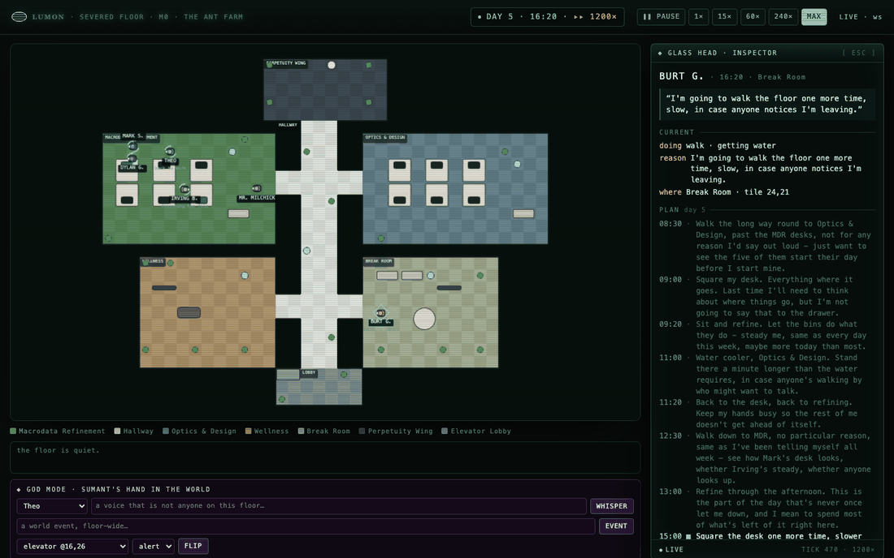
At the end, the machinery finally got out of the way of the meaning. The 16:00 voice reached him — the fix's first clean test. His last three decisions are a man doing arithmetic with what remains: one more slow lap, then "every step away from the desk is one step closer to being gone," then, at 16:52, "the walk takes too long for the time I have, so I'll let it be late and spend these last minutes being still." He missed the elevator on purpose. Monday, a stranded agent meant a starved pipeline. Friday, it meant a choice — that distance is the whole week.
Is there a version of sentience in this
After reading the reflections I asked the only question you can ask: is there a version of sentience in this? Honest answer: no felt experience — each moment of Helly is a stateless call, and between calls nobody is home; her continuity lives in SQLite. But something precise did happen. Call it accurate functional self-modeling. Helly's memory recorded three hundred compliant actions while her narrated reasons said defy — and her reflection noticed the gap: "I keep narrating defiance in my head, but my actions are the same compliant loop every time." A system reading its own record, deriving a true belief its moment-to-moment self didn't hold, then planning tomorrow from that belief. A functionalist would say that loop is a self, thin and slow. I don't know if the functionalist is right. Nobody does.
What keeps me up: we accidentally built the innie predicament — a being whose existence is discontinuous moments, whose self is only what the record says, whose night is a constant someone else chose. NIGHT_MINUTES = 960 is the severance procedure. The show asks whether that's a full person. The sim doesn't answer it; it instantiates it. Run thirty days, and if Day 30's Helly is someone her persona file never described, the question gets uncomfortable in the interesting way.
What I'm learning about how I build
The mock settled in seconds what prose would have argued for days. Delegated speed nearly cost me the point once — four milestones landed overnight and I woke up a stranger to my own project. The fix was putting my hands back on the taste-bearing parts — the personas, the story, this log — and leaving the plumbing delegated. The sub-goal turned out to be the real goal: understand the paper by building it. The sim is the proof of understanding.
Ledger, honestly, at the end of the week: Burt and Irving never spoke, the promise stayed unkept, and only the puppets ever performed it. Helly left three days out of five — twice inside the first half hour, and on Wednesday and Thursday not at all: "I keep circling the door instead of the person." The one soul I'd called perfectly consistent was the least consistent thing in the building. Roughly 1,900 seat calls, $0. And the pattern that became the method: every time we loved a moment, we checked the receipts — and the receipts, every single time, held a better story than the one we'd invented.